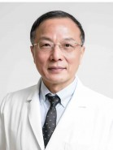

Prof. Jing Zhang
Zhejiang University School of Medicine; The First Affiliated Hospital, Zhejiang University School of Medicine
Jing Zhang is an Endowed Professor and Chair of Pathology at Zhejiang University School of Medicine and Director of Pathology at its First Affiliated Hospital. His research investigates the mechanisms of Parkinson’s disease and dementia and develops biomarkers for early diagnosis and disease monitoring. Before joining Zhejiang University in 2020, he was an endowed professor at the University of Washington, where he also directed neuropathology. He earned his PhD in cell biology at Duke University and completed pathology training at Vanderbilt University.